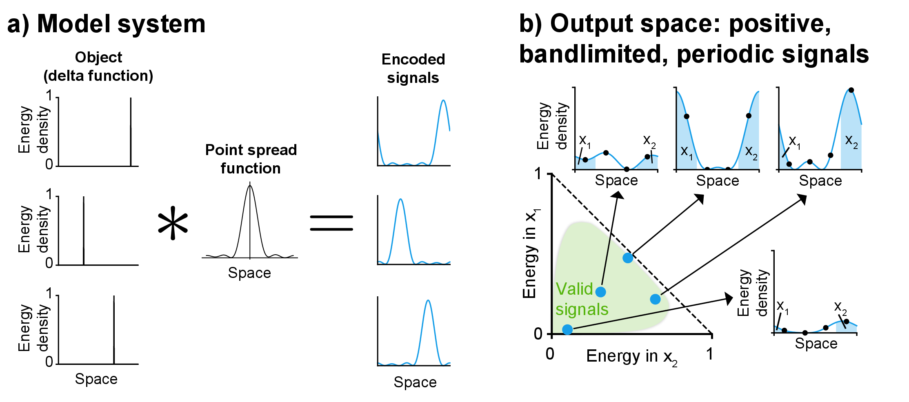

The 1D Model System
How well can an encoder distribute signals in a space so that they remain distinguishable after distortion? To answer this, we define a minimal model. Objects live on a 1D periodic domain. Each is encoded into a signal by a bandlimited, nonnegative convolution kernel (a point spread function), as shown in (a).
The encoding maps each object to a point in a constrained region of a finite-dimensional space. Integrating the encoded signal over sampling intervals yields one coordinate per interval. In physical systems like cameras, this quantity is energy (e.g. photon counts), so we use that term here. These coordinates are nonnegative and sum to at most unit energy (the positive orthant of the L1 unit ball). Bandlimitedness further restricts the reachable region: convolution with a finite-bandwidth kernel cannot concentrate all energy at a single point, so the valid signals (green in (b)) occupy only a subset of this region.
